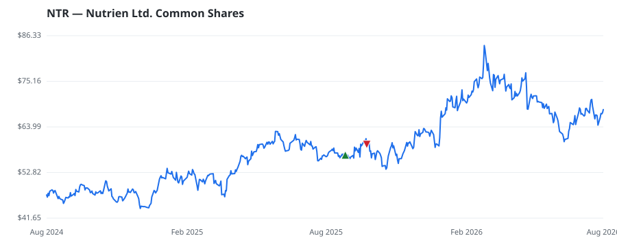

bullish · bearish · n/a — dots: price>SMA10 · SMA10>SMA50 · SMA50>SMA200 · up>down volume (20d)
Other · large cap
Members who bought NTR earned a dollar-weighted +5.1% from their disclosure dates, versus -0.7% for the S&P 500 over the same holding windows (+5.8% alpha).

▲ green = a disclosed purchase · ▼ red = a disclosed sale (plotted on disclosure date)
Created in 2018 as a result of the merger between PotashCorp and Agrium, Nutrien is the world's largest fertilizer producer by capacity. Nutrien produces the three main crop nutrients—nitrogen, potash, and phosphate—although its main focus is potash, where it is the global leader in installed capacity with a roughly 20% market share. The company is also the largest agricultural retailer in North America and Australia, selling fertilizers, crop chemicals, seeds, and services directly to farm customers through its brick-and-mortar stores and online platforms. · website
| Member | Chamber | Out-performer | Disclosed buys $ | Return on buys |
|---|---|---|---|---|
| Valerie Hoyle | house | — | $8K | +5.1% |
Disclosed $ figures are bracket midpoints — filings report ranges (e.g. $1,001–$15,000), not exact amounts.
🛒 Newly buying: United Capital Management of KS, Inc. (+10%, 0.9% of book) · HIMENSION CAPITAL (SINGAPORE) PTE. LTD. (+44%, 0.1% of book)
| Fund | Fund alpha vs SPY | Position | % of book |
|---|---|---|---|
| SailingStone Capital Partners LLC | +33% | $18M | 3.4% |
| United Capital Management of KS, Inc. | +10% | $7M | 0.9% |
| Sicart Associates LLC | +12% | $5M | 1.2% |
| HIMENSION CAPITAL (SINGAPORE) PTE. LTD. | +44% | $1M | 0.1% |
Hedge data: SEC EDGAR 13F · ranked funds beat SPY in >50% of their quarters · fund alpha = mirror-portfolio return minus SPY.